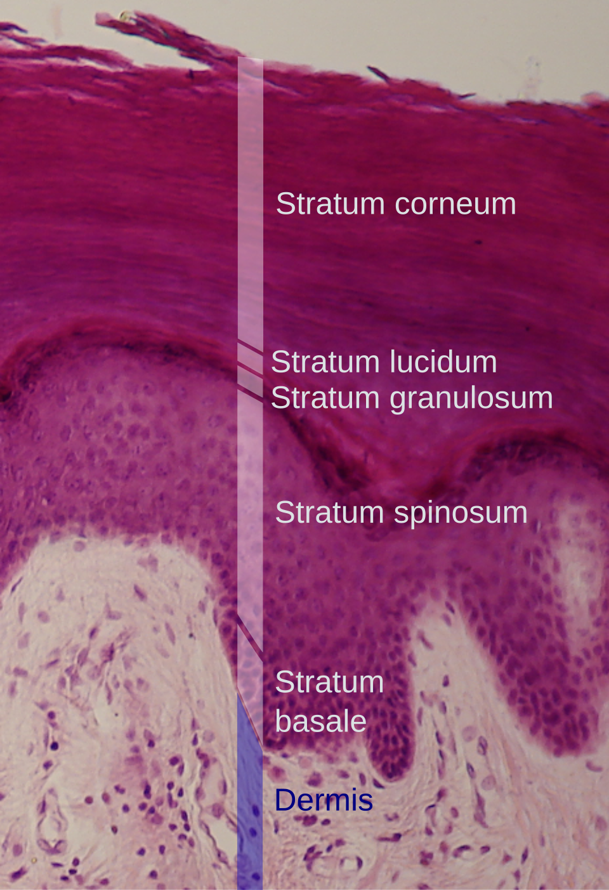

参与结构
帮助角蛋白丝聚集，与角质层形成有关。
01 / 皮肤最外层
丝聚蛋白（FLG）是表皮中的结构相关蛋白，帮助角蛋白丝聚集；其后续分解产物也是角质层天然保湿因子的来源之一。

角质层位于表皮最外侧。图示的是厚皮切片；丝聚蛋白与角蛋白丝聚集有关，细胞间脂质同样参与屏障结构。
图片：Mikael Häggström（基于 Wbensmith 作品），CC BY 3.0。原图英文标注，未修改。查看原图与授权 ↗帮助角蛋白丝聚集，与角质层形成有关。
与角质细胞和细胞间脂质共同维持屏障功能。
后续分解为氨基酸等，参与天然保湿因子组成。
02 / 从结构到保湿
在表皮颗粒层形成，随后加工为丝聚蛋白。
帮助角蛋白丝聚集，参与角质层结构形成。
后续分解形成氨基酸及其衍生物，帮助角质层吸附并留住水分。
不是“分解成水”：丝聚蛋白的分解产物参与天然保湿因子（NMF），通过吸湿与保水帮助维持角质层含水状态。
03 / 重组蛋白研究
重组人源化丝聚蛋白是中科极美的研发方向。公开基础研究曾在特定的细胞穿透肽连接体系中观察到表皮模型穿透及动物实验效果；这些结果不能直接等同于多光在售化妆品能透皮，也不能直接证明产品具有治疗、抗皱或屏障重建功效。
化妆品的保湿、修护等具体宣称，应以对应产品的备案与功效评价为准。
了解企业研发表皮会持续更新，更新速度随年龄、部位和状态变化；“28天”不能当作丝聚蛋白固定再生周期。
它与角质层结构和天然保湿因子有关。保湿机制不等于产品抗皱功效；抗皱宣称需要对应产品的功效证据。
专利保护由具体权利要求和国家或地区决定。中科极美有相关专利资料，但现有证据不足以证明“全国唯一”或“全球唯一”，本页不作此类宣称。
丝聚蛋白的基础研究说明其与屏障结构和保湿机制相关；具体产品的修护效果，应看对应产品的人体功效评价，不能由原料研究直接推定。